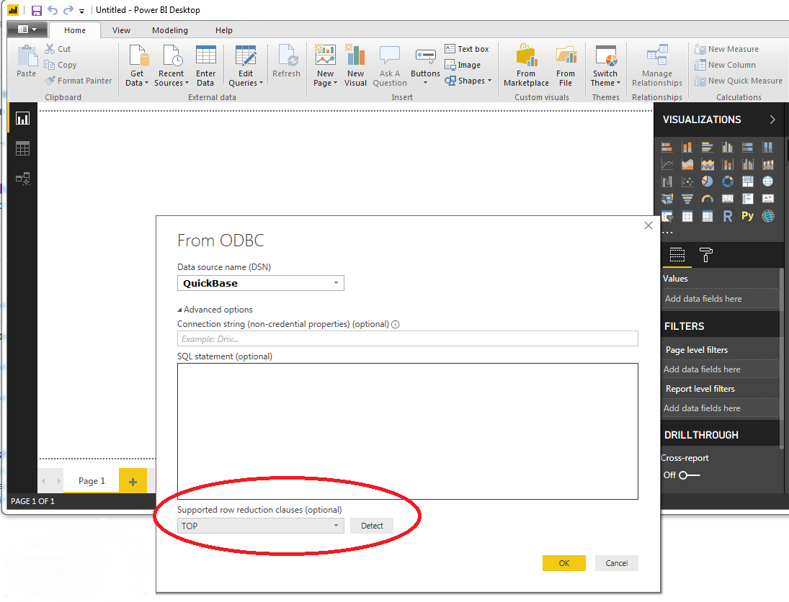

Application Note for QuNect ODBC for QuickBase
PowerBI, faster previews
To increase preview performance, please set the "Supported row reduction clauses" drop down in the Power BI user interface to "TOP". Please look at the screen capture below to understand where to find this setting. 